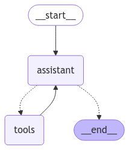

🛠️ Tema 7: Tools – Integración de Herramientas Externas en el Grafo
🚀 ¿Qué son las Tools en LangGraph?
Las tools (herramientas) son funciones externas que el grafo puede invocar para realizar tareas específicas, como consultas a bases de datos, cálculos matemáticos o llamadas a APIs externas.
Las tools permiten que el grafo extienda sus capacidades más allá de los nodos internos, integrando lógica personalizada o servicios de terceros.
🧠 ¿Por qué son Importantes las Tools?
- Extensibilidad: Permiten que el grafo interactúe con APIs externas y sistemas avanzados.
- Modularidad: Las tools se definen de forma independiente y se integran fácilmente en el flujo del grafo.
- Eficiencia: Delegan tareas específicas a funciones externas, reduciendo la complejidad dentro de los nodos.
Consejo
Piensa en las tools como plugins que añaden nuevas capacidades al grafo sin necesidad de modificar su estructura central.
⚙️ ¿Cómo Funcionan las Tools?
- Definición de Tools: Creamos funciones externas que pueden recibir parámetros y devolver resultados.
- Vinculación al Modelo de Lenguaje (LLM): Asociamos estas tools al LLM para que pueda invocarlas durante el flujo de trabajo.
- Ejecución Condicional: Si el LLM detecta que es necesario usar una tool, el grafo redirige el flujo para ejecutarla y procesar el resultado.
Nota
Es fundamental entender que es el LLM quien decide qué tool invocar en función del mensaje o prompt proporcionado. El grafo facilita la integración de herramientas, pero la decisión de cuál utilizar se basa en la interpretación que hace el modelo del contexto y las instrucciones.
📋 Ejemplo Práctico: Chatbot con Tools para Soporte y Ventas
Vamos a construir un grafo que actúa como un asistente virtual, redirigiendo solicitudes de los usuarios a diferentes herramientas según sus necesidades.
El chatbot podrá:
- Consultar precios de productos.
- Verificar el estado de pedidos.
- Abrir tickets de soporte.
from langchain_openai import ChatOpenAI
# Definimos las tools externas con docstrings
def check_price(product: str) -> str:
"""Consulta el precio de un producto.
Args:
product: Nombre del producto a consultar.
Returns:
El precio del producto en formato texto.
"""
# Simulamos una consulta a nuestra base de datos.
return f"El precio de {product} es de 100€."
def order_status(order_id: int) -> str:
"""Consulta el estado de un pedido.
Args:
order_id: ID del pedido.
Returns:
El estado actual del pedido.
"""
# Simulamos una consulta a nuestro ORM.
return f"El pedido con ID {order_id} está en camino."
def open_ticket(issue: str) -> str:
"""Abre un ticket de soporte.
Args:
issue: Descripción del problema o incidencia.
Returns:
Confirmación de apertura del ticket.
"""
# Simulamos una creacion de un ticket en nuestro sistema de soporte.
return f"Se ha abierto un ticket de soporte para el problema: {issue}."
tools = [check_price, order_status, open_ticket]
# Vinculamos las tools al modelo de lenguaje
llm = ChatOpenAI(model="gpt-4o-mini")
llm_with_tools = llm.bind_tools(tools, parallel_tool_calls=False)
- Tools (
check_price,order_status,open_ticket): Simulan herramientas externas que realizan distintas tareas para ventas y soporte.
Nota Importante
Cuando llamamos a bind_tools, no se modifica el modelo original (llm), sino que se genera una nueva instancia con las herramientas vinculadas.
Por esta razón, es necesario asignarlo a una nueva variable (llm_with_tools).
Esto garantiza que el modelo original permanezca sin cambios y podamos reutilizarlo o aplicar diferentes herramientas en otros contextos.
Ejemplo:
👉 llm sigue siendo el modelo base, mientras que llm_with_tools es la versión extendida con las tools activas.
🏗️ Construcción del Grafo
Creamos los nodos y edges necesarios para integrar las tools al flujo del grafo.
from langgraph.graph import MessagesState
from langchain_core.messages import HumanMessage, SystemMessage
from langgraph.graph import START, StateGraph
from langgraph.prebuilt import tools_condition
from langgraph.prebuilt import ToolNode
sys_msg = SystemMessage(content="Eres un asistente de ventas y soporte. Responde usando las herramientas disponibles.")
def assistant(state: MessagesState):
return {"messages": [llm_with_tools.invoke([sys_msg] + state["messages"])]}
builder = StateGraph(MessagesState)
# Añadimos nodos
builder.add_node("assistant", assistant)
builder.add_node("tools", ToolNode(tools))
# Definimos los edges y el flujo del grafo
builder.add_edge(START, "assistant")
builder.add_conditional_edges("assistant", tools_condition)
builder.add_edge("tools", "assistant")
graph_with_tools = builder.compile()
from IPython.display import Image, display
display(Image(graph_with_tools.get_graph(xray=True).draw_mermaid_png()))

- Assistant Node: El nodo principal procesa el mensaje del usuario y decide si debe invocar alguna tool.
- Router Condicional: El flujo se redirige al nodo de tools si se detecta una llamada a alguna de ellas.
🚀 Invocando el Grafo
Probamos el grafo enviando un mensaje del usuario para ver cómo se invocan las tools en el flujo.
messages = [HumanMessage(content="Quiero saber el precio del producto 'RTX4070' y abrir un ticket de soporte.")]
response = graph_with_tools.invoke({"messages": messages})
for msg in response["messages"]:
msg.pretty_print()
================================ Human Message =================================
Quiero saber el precio del producto 'RTX4070' y abrir un ticket de soporte.
================================== Ai Message ==================================
Tool Calls:
check_price (call_0Ws3GDPS0sZHn3xhK6M10pxX)
Call ID: call_0Ws3GDPS0sZHn3xhK6M10pxX
Args:
product: RTX4070
================================= Tool Message =================================
Name: check_price
El precio de RTX4070 es de 100€.
================================== Ai Message ==================================
El precio de la RTX4070 es de 100€.
Ahora, por favor, indícame la descripción del problema o incidencia para abrir el ticket de soporte.
El chatbot analiza la solicitud, invoca las tools adecuadas y devuelve una respuesta consolidada al usuario.
🔎 Recursos:
- Ver notebook en Google Colab
- Ver ejemplo calculadora en Google Colab
 Definición: Tools
Definición: Tools- Definición: tools_condition
- Definición: ToolNode
- How-to-guide: Tools
🧑🏫 ¿Qué Hemos Aprendido?
- Tools: Permiten extender el grafo con funciones externas que realizan tareas específicas.
- Integración con LLM: Las tools se vinculan directamente al modelo de lenguaje, permitiendo respuestas más avanzadas.
- Flujo Dinámico: El grafo puede invocar tools de forma condicional, adaptándose a las necesidades del usuario.
🌐 ¿Qué es lo Siguiente?
En el próximo tema, exploraremos Trim y Filter Messages, técnicas que permiten controlar y optimizar el historial de mensajes en el grafo.
Esto es clave para gestionar conversaciones largas y garantizar que el modelo reciba solo la información más relevante.